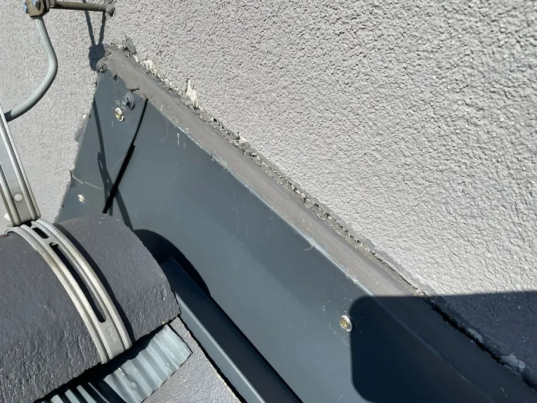
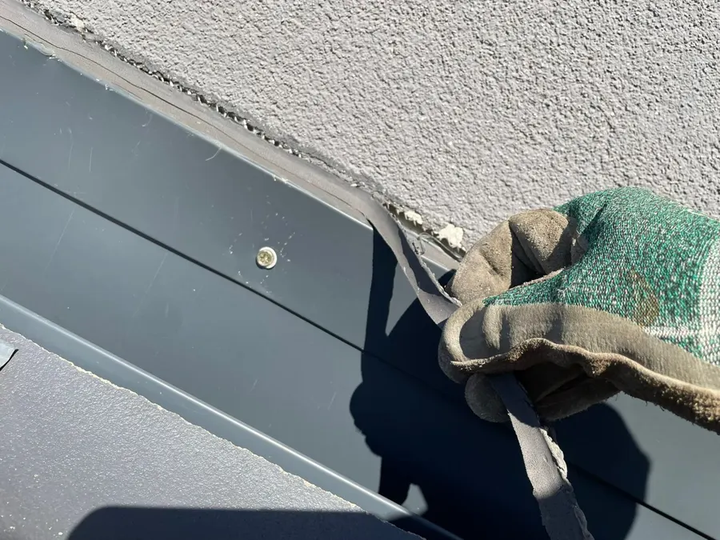

Nieszczelne opierzenie komina
Jeśli po deszczu pojawiają się zacieki na suficie przy kominie albo mokre plamy na ścianie komina na poddaszu, najczęstszą przyczyną jest nieszczelne opierzenie, czyli obróbka blacharska na styku komina z dachem. Naprawa polega na usunięciu starej taśmy lub masy, oczyszczeniu styku i ponownym uszczelnieniu albo wymianie obróbki.
Czym jest opierzenie komina?
Opierzenie to obróbka blacharska, która zamyka styk komina z pokryciem dachu. Blacha z jednej strony leży na dachówce lub papie, z drugiej jest dociśnięta do ściany komina listwą i uszczelniona masą albo taśmą. To jedno z najbardziej narażonych miejsc na dachu: pracuje z każdą zmianą temperatury, a woda spływa po nim przy każdym deszczu.

Objawy nieszczelnego opierzenia
- zacieki lub mokre plamy na suficie przy kominie, najczęściej po ulewie albo przy wietrze,
- zawilgocona ściana komina na poddaszu lub w ostatniej kondygnacji,
- odspojona, spękana lub wykruszona masa uszczelniająca przy listwie,
- odstająca listwa dociskowa albo luźne wkręty,
- rdza lub wygięta blacha przy koszu za kominem.
Przeciek przy kominie łatwo pomylić z kondensacją w przewodzie kominowym. Jeśli plamy pojawiają się tylko po deszczu, winna jest zwykle obróbka. Jeśli także przy suchej pogodzie, w sezonie grzewczym, trzeba sprawdzić przewód kominowy razem z kominiarzem.
Dlaczego opierzenie przestaje być szczelne?
Najczęściej zawodzi materiał uszczelniający. Taśma lub masa starzeje się od słońca i mrozu, traci przyczepność do tynku i odchodzi. Częste przyczyny to też tynk komina, który kruszy się pod listwą, źle wykonany kosz za kominem, w którym zbiera się woda i liście, oraz uszkodzenia po wichurach i odśnieżaniu.
Jak wygląda naprawa?
- Oględziny i zdjęcia. Sprawdzamy całe opierzenie, kosz, listwę i tynk komina. Zdjęcia trafiają do protokołu.
- Usunięcie starego uszczelnienia. Zdejmujemy starą taśmę i masę, czyścimy i odtłuszczamy styk.
- Naprawa podłoża. Jeśli tynk komina się kruszy, najpierw go uzupełniamy, bo na słabym podłożu nowe uszczelnienie też nie wytrzyma.
- Nowe uszczelnienie lub nowa obróbka. Dociskamy listwę, stosujemy trwałą masę dekarską lub taśmę do obróbek. Gdy blacha jest skorodowana lub źle wyprofilowana, wymieniamy ją.
- Kontrola i protokół. Sprawdzamy spływ wody i przekazujemy zdjęcia przed i po.

Dlaczego bez rusztowania?
Komin jest zwykle w środku połaci, daleko od krawędzi dachu. Rusztowanie przy elewacji niewiele tu pomaga, a podnośnik często nie ma gdzie stanąć. Na linach docieramy do komina bezpośrednio z dachu, bez chodzenia po kruchej dachówce i bez zajmowania chodnika. Dla wspólnoty oznacza to niższy koszt i naprawę nawet w ciągu 24–48 godzin od zgłoszenia.
Więcej o pracach przy dachach i kominach budynków mieszkalnych: prace wysokościowe dla wspólnot mieszkaniowych.
O autorze: Przemysław Szapar od 25 lat pracuje na wysokości, w Polsce i za granicą, na lądzie i na morzu. Technik IRATA i instruktor szkoleń GWO, współwłaściciel Rope Access Group z Gdyni.
Pytania i odpowiedzi
Czy nieszczelne opierzenie można naprawić zimą?
Tak, przy suchej pogodzie i temperaturze, w której pracuje dany materiał uszczelniający. Przy mrozie i opadach wykonujemy zabezpieczenie tymczasowe, a docelową naprawę w lepszych warunkach.
Jak często sprawdzać obróbki kominów?
Co najmniej raz w roku, najlepiej przy okresowym przeglądzie budynku i po silnych wichurach. Wczesne wykrycie pęknięcia uszczelnienia kosztuje dużo mniej niż naprawa zalanego sufitu.
Czy naprawiacie kominy na dachach kamienic i bloków?
Tak. Pracujemy na dachach kamienic, bloków i domów w Gdyni, Sopocie, Gdańsku i okolicach, także na stromych dachach krytych dachówką.
Potrzebujesz pomocy przy budynku?
Wyślij zdjęcia i adres obiektu. Przygotujemy bezpłatną wycenę, zwykle tego samego dnia roboczego.